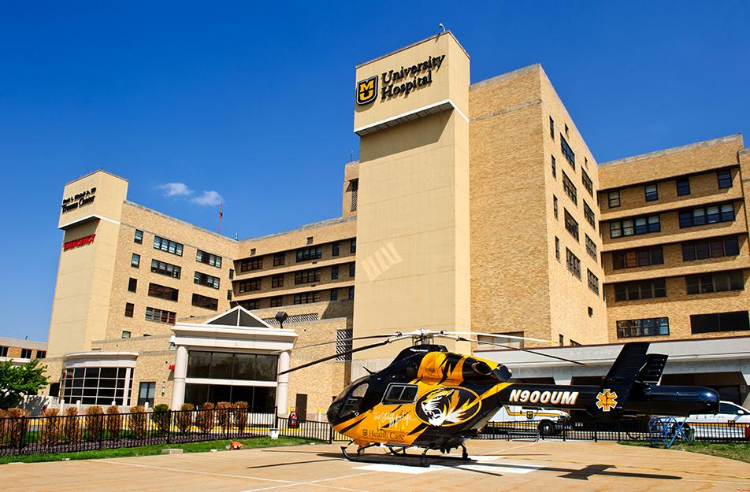

Personal Reflection
Reflection
As I reflect on this journey of self-discovery and professional growth within my healthcare career, I find myself reflecting on the path that has led me here. My nursing career thus far has been woven with diverse experiences, each contributing to my skills and aspirations. From navigating the complexities of entry-level positions to assuming leadership roles, every step has been a lesson in resilience and adaptability. Specifically surviving healthcare regarding a pandemic has helped me take many different steps and pathways to get to where I am today.
Academics
In the realm of academia, my experiences within nursing and business courses have been transformative. Engaging with a variety of subjects and perspectives has broadened my intellectual horizons and deepened my understanding of healthcare dynamics. I have also made many relationships and connections that I would not have previously sought out. Whether delving into theoretical frameworks or grappling with real-world challenges in hands-on projects, each encounter has been an opportunity for growth. Through this journey, I have developed an appreciation for the power of knowledge not only to enlighten but also to empower, and I am committed to fostering a similar sense of curiosity and discovery in others.
Clinical Experience
During my clinical practice, I provided outstanding safe patient care for individuals undergoing surgical intervention. I gained exposure to all service lines, including Trauma, Vascular, Neurology, and Orthopedics. These experiences have further honed my clinical skills and reinforced the importance of compassionate care delivery in diverse healthcare settings.
Career Goals
Central to my nursing career goals is the desire to make a meaningful impact, both in my professional endeavors and in the lives of those around me. I aspire to be not just a practitioner but also a catalyst for positive change, leveraging my skills and expertise to address pressing healthcare issues and effectuate lasting solutions. Whether it's through innovative patient care strategies that enhance outcomes or through mentorship and advocacy that uplifts fellow nurses, I aim to leave a legacy of excellence and compassion in the healthcare community. In essence, my personal reflection and leadership style within nursing are deeply intertwined with my commitment to lifelong learning and service. As I continue to navigate the complexities of my nursing career and educational journey, I remain steadfast in my dedication to excellence, integrity, and compassion. I am enthusiastic about the possibilities that lie ahead and eager to embark on this shared quest for knowledge, growth, and fulfillment within the noble field of nursing.